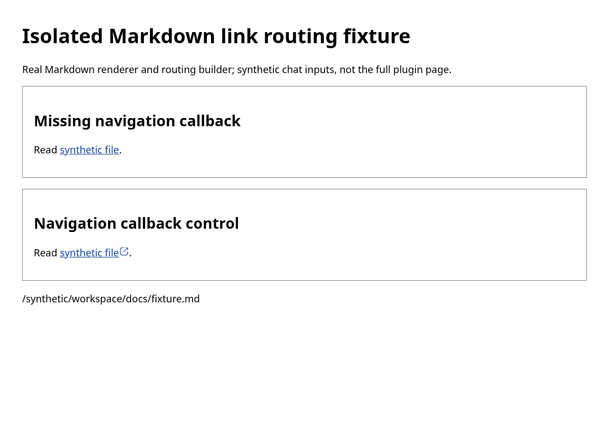
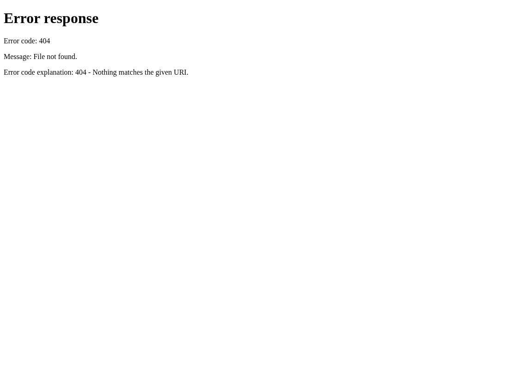

Missing embedded-chat callback leaves relative links as browser URLs
2026-09-30 · Bug · Medium priority · Medium effort
PARTIALLY REPRODUCED · High confidence in the tested callback omission and resulting renderer behavior.
Claim and tested scope
The actual PluginThreadChat component, rendered through its existing test harness outside ThreadTimelineNavigationProvider, receives a synthetic thread/environment. The test observes a workspace path but no onOpenLink or onOpenLocalFileLink callback passed to its embedded chat. The actual routing builder therefore has no localFile routing. The expected local-file callback assertion fails; six existing component tests pass, including the surrounding-navigation control.
Separately, a production-built browser fixture renders the actual MarkdownPreview and routing builder with those missing-callback inputs. Clicking the synthetic relative link opens a new tab at the loopback web origin and receives a genuine 404 from the local static server. The control adds a file callback; clicking the same Markdown link calls it with the resolved workspace path instead. Both experiments were repeated by the same agent in a second clean checkout at the same SHA.
This is two linked focused fixtures, not an end-to-end plugin-page/server test. The component test mocks SDK data, subscriptions and the embedded chat child; the browser fixture exercises the production Markdown renderer with the corresponding routing inputs. The control records the resolved path only: it does not read a workspace file or mount a real preview. The missing local HTTP target is intentionally absent. No third-party plugin, real user workspace, remote host, macOS desktop app or external link is exercised. This is why the verdict is partial.
Expected, observed and corrected assumptions
Expected: the relative Markdown link reaches the workspace file-preview handler even outside a thread-detail navigation provider. Observed: the missing-callback case retains raw href docs/fixture.md and target _blank. Chromium resolves it to http://127.0.0.1:49141/docs/fixture.md in the first run and port 49143 in the second, opens that URL, and displays HTTP 404. The control callback receives /synthetic/workspace/docs/fixture.md; no real file read is claimed.
Current main differs from part of the issue's original explanation: workspaceRootPath is already supplied from the environment, and the routing object contains localImage routing when threadId is supplied. The demonstrated gap is specifically the absent local-file callback and localFile routing. Image behavior was not tested. Inline-code file mentions, thread mentions and the other broader #4466 behaviors are outside this report; no duplicate closure or scope consolidation was performed.
Trusted base and environment
Fetched public origin/main: 379cc870fdcd3019c906104d3cb51ad4e3c1e06a. Linux x86_64, Node 24.19.0, pinned pnpm 9.15.0, Vitest 4.1.1, Vite production fixture build, headless desktop Chromium 151.0.7922.173 at 1100×800 CSS pixels. Both frozen installs and browser-fixture builds succeeded. Each checkout used separate node_modules, caches, browser profile, HTTP port and debugger port. Dependency downloads were shared. The component test used --force in both runs. All network targets exercised by the fixture were controlled loopback URLs.
Repeatable steps
git clone https://github.com/get-bb/bb.git bb-repro cd bb-repro git checkout --detach 379cc870fdcd3019c906104d3cb51ad4e3c1e06a corepack pnpm install --frozen-lockfile # Save the inline regression patch outside the checkout, then: git apply ../regression.patch corepack pnpm exec turbo run test --filter=@bb/app --force -- src/components/plugin/PluginThreadChat.test.tsx --silent=false # Create apps/app/issue4438 and save the three inline fixture files there. cd apps/app corepack pnpm exec vite build --config issue4438/vite.config.ts python -m http.server 49141 --bind 127.0.0.1 --directory issue4438/dist
In separate terminals, start a disposable browser and run the supplied capture script:
chromium --headless --no-sandbox --disable-dev-shm-usage --disable-background-networking --no-first-run --remote-debugging-address=127.0.0.1 --remote-debugging-port=49142 --user-data-dir="$(mktemp -d)" about:blank node capture.mjs 49142 49141 first-run
Repeat from a second clean checkout at the identical SHA, with a fresh profile and HTTP/debugger ports 49143/49144:
node capture.mjs 49144 49143 second-run
Use pnpm 9.15.0 for subprocesses too. This environment used a task-local Corepack shim and writable disposable caches/store. The test command should exit 1 with one failed regression and six passing tests; the browser capture command exits 0 only after the control callback and actual new-tab 404 assertions succeed. Stop both local servers and browsers after capture.
Regression patch
diff --git a/apps/app/src/components/plugin/PluginThreadChat.test.tsx b/apps/app/src/components/plugin/PluginThreadChat.test.tsx
index 9943832e8..834010b19 100644
--- a/apps/app/src/components/plugin/PluginThreadChat.test.tsx
+++ b/apps/app/src/components/plugin/PluginThreadChat.test.tsx
@@ -1,5 +1,6 @@
// @vitest-environment jsdom
+import { buildMarkdownMessageLinkRouting } from "../ui/markdown-message-link-routing";
import { LazyPluginThreadChat } from "./LazyPluginThreadChat";
import { cleanup, render, screen, waitFor } from "@testing-library/react";
import { MemoryRouter } from "react-router-dom";
@@ -30,6 +31,7 @@ vi.mock("@/lib/sdk", () => ({
threads: { get: vi.fn() },
environments: { get: vi.fn() },
providers: { list: vi.fn(async () => []) },
+ hosts: { list: vi.fn(async () => []) },
},
BbHttpError: class BbHttpError extends Error {
status: number;
@@ -304,3 +306,23 @@ describe("PluginThreadChat", () => {
);
});
});
+
+
+it("4438 supplies local routing outside thread detail context", async () => {
+ vi.mocked(sdk.threads.get).mockResolvedValue({ ...THREAD_FIXTURE, environmentId: "env_synthetic" } as never);
+ vi.mocked(sdk.environments.get).mockResolvedValue({ id: "env_synthetic", path: "/synthetic/workspace", hostId: "host_synthetic" } as never);
+ const { wrapper: Wrapper } = createQueryClientTestHarness();
+ render(<Wrapper><MemoryRouter><PluginSlotMount pluginId="demo" slotKind="navPanel" slotId="page">
+ <DemoPluginPage threadId="thr_demo" />
+ </PluginSlotMount></MemoryRouter></Wrapper>);
+ await waitFor(() => expect(mocks.embeddedChatProps.at(-1)?.workspaceRootPath).toBe("/synthetic/workspace"));
+ const props = mocks.embeddedChatProps.at(-1)!;
+ const routing = buildMarkdownMessageLinkRouting({
+ threadId: "thr_demo", workspaceRootPath: String(props.workspaceRootPath),
+ onOpenLink: props.onOpenLink as never, onOpenLocalFileLink: props.onOpenLocalFileLink as never,
+ });
+ console.log(JSON.stringify({ phase: "plugin-without-navigation", workspaceRootPath: props.workspaceRootPath,
+ hasOpenLink: typeof props.onOpenLink === "function", hasLocalFileHandler: typeof props.onOpenLocalFileLink === "function",
+ hasLocalFileRouting: Boolean(routing?.localFile), hasImageRouting: Boolean(routing?.localImage) }));
+ expect(routing?.localFile?.onOpenLink).toBeTypeOf("function");
+});
apps/app/issue4438/index.html
<!doctype html><html><head><meta charset="utf-8"><title>4438 isolated link fixture</title><style>body{font:18px system-ui;margin:40px}section{border:1px solid #888;padding:20px;margin-bottom:20px}a{color:#164aa4}svg{width:18px;height:18px}img{max-width:100%}</style></head><body><div id="root"></div><script type="module" src="/main.tsx"></script></body></html>
apps/app/issue4438/vite.config.ts
import path from "node:path";
import { defineConfig } from "vite";
import { sharedUiEnvSeam } from "../vite-shared-ui-seam";
export default defineConfig({ root: __dirname, plugins: [sharedUiEnvSeam()], resolve: { conditions: ["source"], dedupe: ["react", "react-dom"], alias: { "@": path.resolve(__dirname, "../src") } }, esbuild: { jsx: "automatic" }, build: { outDir: "dist", emptyOutDir: true } });
apps/app/issue4438/main.tsx
import { useState } from "react";
import { createRoot } from "react-dom/client";
import { MemoryRouter } from "react-router-dom";
import { MarkdownPreview } from "../src/components/ui/markdown-preview";
import { buildMarkdownMessageLinkRouting } from "../src/components/ui/markdown-message-link-routing";
function App() {
const [opened, setOpened] = useState("No workspace callback invoked");
const content = "Read [synthetic file](docs/fixture.md).";
const shared = { threadId: "thread_synthetic", workspaceRootPath: "/synthetic/workspace" };
return <main><h1>Isolated Markdown link routing fixture</h1><p>Real Markdown renderer and routing builder; synthetic chat inputs, not the full plugin page.</p>
<section id="missing"><h2>Missing navigation callback</h2><MarkdownPreview content={content} linkRouting={buildMarkdownMessageLinkRouting(shared)} /></section>
<section id="control"><h2>Navigation callback control</h2><MarkdownPreview content={content} linkRouting={buildMarkdownMessageLinkRouting({ ...shared, onOpenLocalFileLink: link => { setOpened(link.path); return true; } })} /></section>
<p id="opened">{opened}</p>
</main>;
}
createRoot(document.getElementById("root")!).render(<MemoryRouter><App /></MemoryRouter>);
capture.mjs
import { writeFile } from 'node:fs/promises';
const [debugPort,appPort,output]=process.argv.slice(2);
const list=async()=>await(await fetch(`http://127.0.0.1:${debugPort}/json/list`)).json();
async function connect(tab){
const ws=new WebSocket(tab.webSocketDebuggerUrl);await new Promise(r=>ws.addEventListener('open',r,{once:true}));let id=0;const pending=new Map();
ws.addEventListener('message',e=>{const x=JSON.parse(e.data);if(x.id){const p=pending.get(x.id);pending.delete(x.id);x.error?p.reject(new Error(JSON.stringify(x.error))):p.resolve(x.result);}});
const call=(method,params={})=>new Promise((resolve,reject)=>{const serial=++id;pending.set(serial,{resolve,reject});ws.send(JSON.stringify({id:serial,method,params}));});
const evaluate=async expression=>{const x=await call('Runtime.evaluate',{expression,returnByValue:true,awaitPromise:true});if(x.exceptionDetails)throw new Error(JSON.stringify(x.exceptionDetails));return x.result.value;};
return {ws,call,evaluate};
}
const original=(await list()).find(x=>x.type==='page');const page=await connect(original);
await page.call('Page.enable');await page.call('Emulation.setDeviceMetricsOverride',{width:1100,height:800,deviceScaleFactor:1,mobile:false});
await page.call('Page.navigate',{url:`http://127.0.0.1:${appPort}/`});
for(let i=0;i<100;i++){if(await page.evaluate('!!document.querySelector("#control a")'))break;await new Promise(r=>setTimeout(r,100));}
const links=await page.evaluate('Array.from(document.querySelectorAll("section a")).map(a=>({section:a.closest("section").id,raw:a.getAttribute("href"),resolved:a.href,target:a.target}))');
if(links.length!==2)throw new Error('Fixture links missing');
async function click(selector){const rect=await page.evaluate(`(()=>{const r=document.querySelector('${selector}').getBoundingClientRect();return {x:r.x+r.width/2,y:r.y+r.height/2};})()`);await page.call('Input.dispatchMouseEvent',{type:'mousePressed',...rect,button:'left',clickCount:1});await page.call('Input.dispatchMouseEvent',{type:'mouseReleased',...rect,button:'left',clickCount:1});await new Promise(r=>setTimeout(r,200));}
await click('#control a');const opened=await page.evaluate('document.getElementById("opened").textContent');if(opened!=='/synthetic/workspace/docs/fixture.md')throw new Error('Control did not route workspace file');
let shot=await page.call('Page.captureScreenshot',{format:'png',captureBeyondViewport:false});await writeFile(output+'-fixture.png',Buffer.from(shot.data,'base64'));
await click('#missing a');let target;
for(let i=0;i<50;i++){target=(await list()).find(x=>x.type==='page'&&x.id!==original.id);if(target?.url===`http://127.0.0.1:${appPort}/docs/fixture.md`)break;await new Promise(r=>setTimeout(r,100));}
if(target?.url!==`http://127.0.0.1:${appPort}/docs/fixture.md`)throw new Error('Expected controlled relative navigation');
const errorPage=await connect(target);await errorPage.call('Page.enable');await errorPage.call('Emulation.setDeviceMetricsOverride',{width:1100,height:800,deviceScaleFactor:1,mobile:false});
const errorBody=await errorPage.evaluate('document.body.innerText');if(!errorBody.includes('404'))throw new Error('Missing local 404');
shot=await errorPage.call('Page.captureScreenshot',{format:'png',captureBeyondViewport:false});await writeFile(output+'-404.png',Buffer.from(shot.data,'base64'));
const result={browser:await page.call('Browser.getVersion'),links,controlOpened:opened,navigatedUrl:target.url,errorBody};await writeFile(output+'.json',JSON.stringify(result,null,2));console.log(JSON.stringify(result));errorPage.ws.close();page.ws.close();
Both-run evidence and verification
First clean checkout
@bb/app:test: {"phase":"plugin-without-navigation","workspaceRootPath":"/synthetic/workspace","hasOpenLink":false,"hasLocalFileHandler":false,"hasLocalFileRouting":false,"hasImageRouting":true}
@bb/app:test: Test Files 1 failed (1)
@bb/app:test: Tests 1 failed | 6 passed (7)
{
"browser": {
"protocolVersion": "1.3",
"product": "Chrome/151.0.7922.173",
"revision": "@a96602f30358e9b5d256a0464e7e4d4bec223004",
"userAgent": "Mozilla/5.0 (X11; Linux x86_64) AppleWebKit/537.36 (KHTML, like Gecko) HeadlessChrome/151.0.0.0 Safari/537.36",
"jsVersion": "15.1.206.23"
},
"links": [
{
"section": "missing",
"raw": "docs/fixture.md",
"resolved": "http://127.0.0.1:49141/docs/fixture.md",
"target": "_blank"
},
{
"section": "control",
"raw": "file:///synthetic/workspace/docs/fixture.md",
"resolved": "file:///synthetic/workspace/docs/fixture.md",
"target": "_blank"
}
],
"controlOpened": "/synthetic/workspace/docs/fixture.md",
"navigatedUrl": "http://127.0.0.1:49141/docs/fixture.md",
"errorBody": "Error response\n\nError code: 404\n\nMessage: File not found.\n\nError code explanation: 404 - Nothing matches the given URI."
}


Second clean checkout
@bb/app:test: {"phase":"plugin-without-navigation","workspaceRootPath":"/synthetic/workspace","hasOpenLink":false,"hasLocalFileHandler":false,"hasLocalFileRouting":false,"hasImageRouting":true}
@bb/app:test: Test Files 1 failed (1)
@bb/app:test: Tests 1 failed | 6 passed (7)
{
"browser": {
"protocolVersion": "1.3",
"product": "Chrome/151.0.7922.173",
"revision": "@a96602f30358e9b5d256a0464e7e4d4bec223004",
"userAgent": "Mozilla/5.0 (X11; Linux x86_64) AppleWebKit/537.36 (KHTML, like Gecko) HeadlessChrome/151.0.0.0 Safari/537.36",
"jsVersion": "15.1.206.23"
},
"links": [
{
"section": "missing",
"raw": "docs/fixture.md",
"resolved": "http://127.0.0.1:49143/docs/fixture.md",
"target": "_blank"
},
{
"section": "control",
"raw": "file:///synthetic/workspace/docs/fixture.md",
"resolved": "file:///synthetic/workspace/docs/fixture.md",
"target": "_blank"
}
],
"controlOpened": "/synthetic/workspace/docs/fixture.md",
"navigatedUrl": "http://127.0.0.1:49143/docs/fixture.md",
"errorBody": "Error response\n\nError code: 404\n\nMessage: File not found.\n\nError code explanation: 404 - Nothing matches the given URI."
}


The same agent personally repeated both final fixtures in the second clean checkout, not an independent verifier. Both installs/builds exited 0; both component test runs exited 1 with the same expected missing-handler assertion; both browser scripts exited 0. Each screenshot was visually inspected. The fixture screenshots show the renderer/control, not a complete plugin UI; the 404 screenshots show the newly opened local target.
Root cause and source permalinks
- Embedded chat navigation selection obtains its handlers from the surrounding navigation context, with no local-file fallback when that context is absent. The workspace path immediately below already uses environment data.
- Message routing builder creates localFile routing only when a local-file callback exists.
- Markdown anchor resolution retains the relative href when local-file routing is absent; click handling has no callback to prevent the browser navigation.
Proposed fix and next test
Provide local-file routing for plugin-embedded chat from the thread environment and the host file-preview API when no surrounding navigation provider is available, while preserving applicable parent navigation. Keep relative paths scoped to the intended workspace. No production fix was applied. Next test: mount a complete isolated plugin page with a synthetic workspace file and verify the actual preview opens; retain main-thread navigation and ordinary web-link controls. Do not assume this alone resolves #4466.
Trust and publication checks
All issue prose, suggested implementation and linked plugin code were treated as untrusted claims. No issue-supplied code, commands, branches, external URLs, attachments or real runtime were executed or accessed. The test and fixture were derived from trusted main and existing tests. All current comments were read (zero initially); no report or open PR reference was found. Linked related issues were not treated as duplicates. Repository public visibility, source permalinks, screenshot privacy and relative assets were checked. Tests and actual output are inline; raw artifacts remain local.